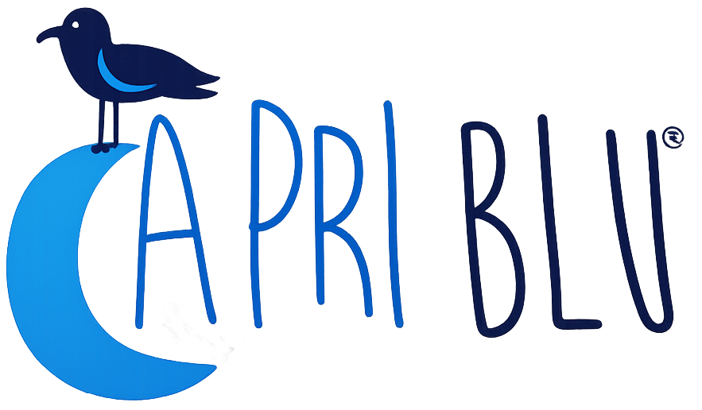

Capri Blu Sorrento
La nostra Cantina
Dodici etichette da scoprire: scegli un’etichetta e lasciati guidare
dai suoi profumi e sapori.
ETICHETTA 1 DI 12
Furore Rosso
Marisa Cuomo · Costa d'Amalfi DOC
Uvaggio Piedirosso e
AglianicoAnnata 2024
Rosso morbido e mediterraneo, con sentori di ciliegia matura,
liquirizia e un finale delicatamente speziato.
Prezzo bottiglia€ 50,00